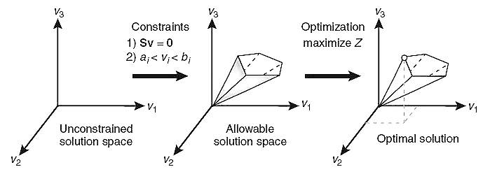

Constraint-based Modeling: Definitions
The idea of constraint-based modeling is to describe a biological
system by a set of constraints, which characterize its possible
behaviors, but in general do not allow to make a precise prediction.
The classical starting point of constraint-based modeling is flux
balance analysis (FBA) of metabolic networks at steady state.
Mathematically speaking, this involves computing a basis of the
underlying polyhedral cone.
Most methods focus on pointed cones, and the metabolic networks have
to be reconfigured in order to obtain this property. But there are
currently trying to develop new methods which work on non-pointed
cones and which allow to characterize the possible behaviors of a
metabolic network in a much more compact way.

Here we explain FBA in more detail:
|
Metabolic
reactions are represented as a stoichiometric matrix (S)
of size m × n.
Every row of
this matrix represents one unique compound (for a system
with m compounds) and every column represents one
reaction (n reactions).
The flux through
all of the reactions in a network is represented by the
vector v, which has a length of n.
Sv
=
0
Any v
that satisfies this equation is said to be in the null space
of S.
Although
constraints define a range of solutions, it is still
possible to identify and analyze single points within the
solution space.
FBA seeks to
maximize or minimize an objective function Z = cTv, which
can be any linear combination of fluxes, where c is a
vector of weights indicating how much each reaction (such as
the biomass reaction when simulating maximum growth)
contributes to the objective function.
Optimization of
such a system is accomplished by linear programming.
|
||||||||
|
In summary the
principle of Flux Balance Analysis will be as follows:
I) Derive mass balance equations
from the reconstruction of a metabolic network and create
the stoichiometric matrix (S).
Flux in two different
situations:
Robustness analysis:
Phenotypic phase planes:
Gene knockout:
Correlation:
|
||||||||
|
Note:
Texts and figures in this page have been chosen
from the following references: What is flux balance analysis? (Nat Biotechnol., 2010, 28(3), 245–248) Elementary flux modes, flux balance analysis, and their application to plant metabolism. (Methods Mol Biol., 2014, 1083, 231-52) |
||||||||
|
Do you want reading more? There are some comprehensive references which could be helpful in more understanding constraint-based methods. We recommend reading the following references for better understanding: |